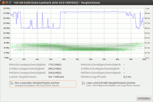

Verschlüsselung
Dieser Artikel wurde für die folgenden Ubuntu-Versionen getestet:
Dieser Artikel ist mit keiner aktuell unterstützten Ubuntu-Version getestet! Bitte diesen Artikel testen und das getestet-Tag entsprechend anpassen.
Zum Verständnis dieses Artikels sind folgende Seiten hilfreich:
Hinweis:
Dieser Artikel ist Teil der Artikelserie SSD, welche das Thema Solid State Drives behandelt.
 Die Verschlüsselung von SSD wird oft nicht empfohlen, da es die Lebensdauer verkürzen soll. Die Entwicklung von SSD ist allerdings so rasant, dass vieles auf aktuelle SSD nicht mehr zutrifft. Dieser Artikel soll mit diesem alten Vorurteil aufräumen und vergleicht die Lebensdauer und Sicherheit der verschiedenen Verschlüsselungsmethoden miteinander.
Die Verschlüsselung von SSD wird oft nicht empfohlen, da es die Lebensdauer verkürzen soll. Die Entwicklung von SSD ist allerdings so rasant, dass vieles auf aktuelle SSD nicht mehr zutrifft. Dieser Artikel soll mit diesem alten Vorurteil aufräumen und vergleicht die Lebensdauer und Sicherheit der verschiedenen Verschlüsselungsmethoden miteinander.
Es gibt bis dato keine Langzeit-Tests oder Studien zur Lebensdauer von SSD, daher handelt es sich im folgenden Text nur um Abschätzungen und Annahmen. Auch gibt es viele unterschiedliche SSD und der folgende Text muss nicht unbedingt für jedes Modell exakt so zutreffen. Hier gilt es, sich selbst über Besonderheiten der eigenen SSD zu informieren.
Hinweis:
Dieser Artikel beleuchtet nur die Thematik „Verschlüsselungen von SSD“. Wie man verschlüsselt und auf welche Arten man dies tun kann, erklärt der Artikel Daten verschlüsseln.
Problematik bei Komplettverschlüsselung¶
Die sicherste unter Linux bekannte Verschlüsselung ist die Komplettverschlüsselung. Dabei wird der Datenträger einmal vollständig mit Zufallsdaten überschrieben und dann alles außer der /boot-Partition verschlüsselt. Der Controller der SSD nimmt dadurch an, dass diese komplett belegt ist und kann somit kein Wear Levelling mehr durchführen, da er nicht zwischen einer komplett vollgeschriebenen und einer verschlüsselten SSD unterscheiden kann. So zumindest bei einigen sehr alten SSD aus der Anfangszeit (2008).
Heutzutage besitzt jede SSD Over-Provisioning (freier Speicher, der für den Benutzer nicht sichtbar ist – siehe auch Spare Area), wodurch trotzdem Wear Levelling stattfinden kann. Ein kleiner Nachteil bleibt, denn im Normalfall nutzt die SSD den freien Speicher und den Speicher des Over-Provisioning. Dadurch ist natürlich eine Verkürzung der Lebensdauer möglich, diese ist aber lange nicht so kritisch, wie oft dargestellt wird (siehe SSD-Verschlüsselung mit TrueCrypt  ).
).
Besitzt man eine alte SSD ohne Over-Provisioning oder möchte man die Haltbarkeit bei einer neuen SSD erhöhen, kann man einen Bereich der SSD unformatiert und damit unverschlüsselt lassen, so dass der Controller der SSD diesen (zusätzlich) für Wear Levelling nutzen kann.
Bei einer Komplettverschlüsselung muss man zwangsläufig auch auf TRIM verzichten, das bei SSD die nicht mehr gebrauchten (beschriebenen) Bereiche freigibt, was jedoch durch das vollständige Beschreiben mit Zufallszahlen verhindert wird. Hier muss man durch die nicht für das Wear Levelling freigegebenen Bereiche mit einem leichten Leistungsrückgang im einstelligen Prozentbereich rechnen.
Komplettverschlüsselung mit TRIM¶
→ Zur Implementierung siehe SSD/TRIM
Bei Nutzung von TRIM teilt man einem Angreifer indirekt mit, welche Bereiche der SSD genutzt werden und welche keine Daten enthalten. Das kann eine Kryptoanalyse erleichtern und bedeutet damit eine theoretische Schwachstelle. Theoretisch deshalb, weil es bisher bei den üblichen Verschlüsselungsmethoden, die LUKS anbietet, keine bekannten Angriffe gibt, die diese Information ausnutzen.
Es gilt hier also abzuwägen, ob man diese theoretische Sicherheit braucht oder ob man eher etwas mehr Leistung und Haltbarkeit der SSD benötigt. Auf jeden Fall kann der Angreifer mit den Informationen von TRIM den benutzten Dateisystemtyp herausfinden, was aber im Allgemeinen nicht sicherheitsrelevant ist.
Allerdings gibt es noch eine kleine Hürde, da die TRIM-Unterstützung mit verschlüsselten SSD noch sehr neu ist. Voraussetzungen sind Kernel 3.1 und Cryptsetup 1.4. Weitere Details und Informationen zu Sicherheitsbedenken von TRIM findet man im Wiki von Cryptsetup. Sollte man sich entscheiden, TRIM zu verwenden, sollte man auch auf das initiale Überschreiben mit Zufallsdaten verzichten, da es in Verbindung mit TRIM sowieso keine Sicherheit mehr bietet und so erstmal unnötig die gesamte SSD vollschreibt.
Teilverschlüsselung mit LUKS¶
→ Zur Implementierung siehe SSD/TRIM
Hier gilt das gleiche wie bei Komplettverschlüsselung – mit dem Vorteil, dass zusätzlich freier Platz für Wear Levelling von den unverschlüsselten Partitionen zur Verfügung steht. Der Nachteil ist, dass Daten aus den verschlüsselten Partitionen auf die unverschlüsselten Partitionen ausgelagert werden können (siehe Swap, SSD/Auslagerung) und somit eine große Lücke in der Verschlüsselungskette besteht.
Diese Methode ist unabhängig von SSD oder Festplatte nur zu empfehlen, wenn man weitere Vorkehrungen für die ausgelagerten Dateien trifft oder nur sehr geringe Anforderungen an die Sicherheit hat. In diesem Fall ist die Verwendung von TRIM sehr empfehlenswert, da diese theoretische Schwachstelle deutlich weniger „wiegt“ als die unverschlüsselten Informationen, die das System preisgibt.
Verschlüsselung auf Dateisystemebene (eCryptfs)¶
Hier gibt es keine Nachteile für die Haltbarkeit oder Leistung. Für die SSD besteht kein Unterschied zu unverschlüsselten Dateisystemen (eine Ausnahme sind SSD mit Sandforce-Controller (siehe Sandforce-Controller). Alle Funktionen wie TRIM und Wear Levelling können problemlos genutzt werden.
Dafür ist es aber auch die unsicherste Methode. Zu den Sicherheitsbedenken bei Teilverschlüsselung mit LUKS kommen noch diverse Informationen über die einzelnen Dateien, die vom Dateisystem bereitgestellt werden, hinzu. Ein vorstellbarer Einsatzbereich für so „unsichere“ Verschlüsselung wäre beispielsweise Daten vor Familienmitgliedern oder Mitbewohnern zu verstecken.
Verschlüsselung auf Hardwareebene¶
Einige Hersteller bieten SSD mit Hardwareverschlüsselung an. Theoretisch wäre das die zweitbeste Lösung für Sicherheit, Langlebigkeit und Leistung. Allerdings wurden hier schon viele Hersteller dabei ertappt, dass sie die Daten entweder gar nicht verschlüsseln oder nur schwach oder mit schweren Implementierungsfehlern.
Leider weiß man nie, ob die Hardwareverschlüsselung sicher ist – man erfährt nur irgendwann, ob sie unsicher ist. Zudem muss man darauf vertrauen, dass der Hersteller keine Hintertüren einbaut. Wenn man in so einem Fall dem profitorientierten Hersteller vertraut, warum vertraut man dann nicht anderen Institutionen wie der Regierung? Verschlüsselung nutzt man ja im Allgemeinen, weil man jemandem oder anderen nicht vertraut.
In Kombination mit Softwareverschlüsselung kann Hardwareverschlüsselung aber durchaus einen zusätzlichen Sicherheitsbonus bieten.
Geschwindigkeitseinbußen¶
Das Ver- und Entschlüsseln der Daten braucht einiges an Rechenleistung. Bei konventionellen Festplatten reicht auch ältere Hardware, um die Daten schnell genug zu ver- und entschlüsseln, so dass man keinen Unterschied zu unverschlüsselten Festplatten bemerkt.
Bei SSD jedoch ist ein gewaltiger Geschwindigkeitssprung zu verzeichnen, dadurch benötigt man auch einen deutlich stärkeren Prozessor. Ab Kernel 2.6.38 besitzt das Kryptographie-Modul dm-crypt Multicore-Support und somit profitiert LUKS von Mehrkernprozessoren. Empfehlenswert sind jedoch Prozessoren, die eine entsprechende AES Engine besitzen. Zum Beispiel die AMD FX Serie (AES-NI), alle VIA Prozessoren (Padlock) und einige Intel Prozessoren (AES-NI). Siehe auch AES-NI. Damit ist auch bei einer SSD von der Verschlüsselung fast nichts zu bemerken.
Man kann auch ohne Hardwarebeschleunigung arbeiten, nur ist dann der Sinn einer schnellen SSD fraglich und bei mobilen Geräten kommt dazu noch ein erhöhter Stromverbrauch bei Zugriffen auf den Datenträger.
Hinweis:
Die Hardwarebeschleunigung des Prozessors (z.B. AES-NI) hat nichts mit der Verschlüsselung auf Hardwareebene zu tun. Letzteres ist vom Prozessor unabhängig und wird vom SSD-Controller erledigt, was im Allgemeinen keine negativen Auswirkungen auf die Leistung hat.

Sandforce-Controller¶
Der Sandforce-Controller wird u. a. bei den beliebten OCZ Vertex SSD genutzt und hat eine Besonderheit: Er komprimiert Daten, um die Geschwindigkeit zu erhöhen und Schreibzugriffe zu vermindern (daraus resultiert längere Haltbarkeit). Leider lassen sich Zufallsdaten nicht komprimieren und verschlüsselte Daten sehen aus wie Zufallsdaten. Daher muss man bei Sandforce-Controllern mit zusätzlichen Leistungseinbußen (siehe nebenstehendes Bild; Abfall der Schreib- und Leseraten) und verkürzter Lebensdauer rechnen, möchte man SSD mit Sandforce-Controllern verschlüsseln. Plant man eine in welcher Form auch immer geartete Verschlüsselung, sollte man eine SSD ohne Sandforce-Controller kaufen.
SSD und VeraCrypt / TrueCrypt¶
Aufgrund der Funktionsweise von SSD ist bisher noch nicht abschließend geklärt, welche Auswirkungen SSD-spezifische Funktionen wie beispielsweise das TRIM-Kommando oder das in den Controllern von SSD implementierte Wear Levelling im Zusammenspiel mit dem Einsatz von VeraCrypt bzw. TrueCrypt auf die Leistung und Langlebigkeit von SSD haben. Weitere Informationen zum Einsatz von TrueCrypt auf SSD findet man im Abschnitt Links.

- Erstellt mit Inyoka
-
 2004 – 2017 ubuntuusers.de • Einige Rechte vorbehalten
2004 – 2017 ubuntuusers.de • Einige Rechte vorbehalten
Lizenz • Kontakt • Datenschutz • Impressum • Serverstatus -
Serverhousing gespendet von